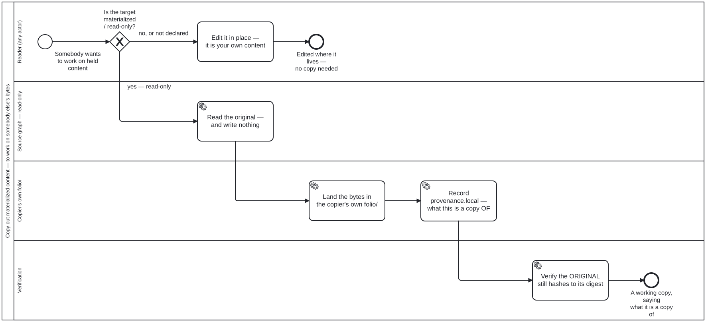

Generated from
cat-harness/processes/library/copy-out-materialized.bpmnbygen-processes-viz.ts— do not edit here. All processes
Process_CopyOutMaterialized · strict · 5 step(s)
Somebody wants to change content this repository holds a read-only materialized copy of: copy it into their own folio/, recording which original it came out of. Materialized content is read-only. The owner, 2026-09-21: “if we have a materialized
STRICT, and the reason is narrow. Only one step here is a gate, and it is Gateway_Frozen: whether the target is read-only at all. Everything after it is mechanical. What makes the process strict is that skipping it does not fail loudly — an edit in place succeeds, and is only caught later by check:materialized-fixity hashing bytes against the digest their record carries. A process whose omission looks exactly like compliance is the vlhk shape, and advisory would not hold it.
The copy-out re-opens NONE of the five materialisation gates. Those were answered when this repository decided it may hold these bytes at all (materialize-remote.bpmn); copying something already held is not a second acquisition. What the copy does inherit is the restrictions and copyright verdicts — the copy is a new artefact in the copier’s folio, and publishing it is that folio’s decision.
The three states, the five gates and the provenance pair are folio-assistant-core/schemas/materialization.ts. Nothing here restates them.

| lane | role | what it does here |
|---|---|---|
| Reader (any actor) | user |
ANY reader, and that is a ruling rather than an oversight — the owner, 2026-09-22, chose it over restricting the copy-out to an editor. Refusing a copy would not protect the original, because the original is protected by being read-only; a permission here would only stop people working. So this lane has no entry condition, and the one decision in it is about the TARGET rather than about the actor. |
| Source graph — read-only | corpus |
This lane holds exactly one task and it WRITES NOTHING, which is the point of drawing it at all. A lane that is only ever read from is the visible form of the rule: the arrow runs out of here and never back. Task_ReadSource is where the process would go wrong if anybody added a step, so its emptiness is load-bearing rather than incidental. |
| Copier’s own folio/ | author |
Where the copy lands, chosen by the owner 2026-09-22 over a scratch area. A scratch area lost because it makes the copy publishable by accident: a directory nobody declared is a directory nobody gates. The two writes here are ordered and both required — Task_Land puts the bytes somewhere, Task_RecordProvenance says what they are a copy OF, and a process that stopped after the first would produce a file indistinguishable from original work one rename later. |
| Verification | validation-pipeline |
Asks the question the whole process exists to keep answerable: does the SOURCE still hash to its recorded digest? A copy-out that disturbed the original is not a copy-out, and this lane is the only thing that can tell the difference after the fact — the bytes look the same either way. |
Every one of the 5 step(s) is documented.
| step | lane | skill / sub-process | what it does |
|---|---|---|---|
Edit it in place — it is your own contentTask_EditDirectly |
Reader (any actor) | copy-out-materialized |
The ordinary path, drawn so the process does not read as though every edit needs a copy. Content in a writable directory is authored content and is edited where it lives; the copy-out is for somebody else’s bytes, not for yours. |
Read the original — and write nothingTask_ReadSource |
Source graph — read-only | copy-out-materialized |
A read, and the only interaction this process has with the source. Its digest and provenance are carried forward: the digest so Task_VerifySourceUntouched has something to check against, and provenance so the copy can name what it came out of without re-deriving it. |
Land the bytes in the copier’s own folio/Task_Land |
Copier’s own folio/ | copy-out-materialized |
Into the copier’s own declared folio/, never a scratch area — a directory nobody declared is a directory nobody gates, and the copy would be publishable by accident. The copy is NOT read-only: it is the copier’s own content, makes no claim about anybody else’s bytes, and freezing it too would mean the next person needs a copy of the copy. |
Record provenance.local — what this is a copy OFTask_RecordProvenance |
Copier’s own folio/ | copy-out-materialized |
The step that is easy to omit and impossible to reconstruct afterwards. provenance is a PAIR: upstream is the remote thing, local is the original in this repository. A copy-out writes local; it does not overwrite upstream, and it does not reuse upstream for a local value — that was one field until 2026-09-22, and by then 5 of the 9 who-iris item records were using it for a local one in violation of its own documentation. Without local, one rename later the copy is indistinguishable from original work and nothing downstream can repair it, because the information was never written down. |
Verify the ORIGINAL still hashes to its digestTask_VerifySourceUntouched |
Verification | copy-out-materialized |
check:materialized-fixity. Run against the SOURCE, not the copy — the copy is new content with no claim to verify, and the source is the thing a botched copy-out would have disturbed. A mismatch here means the copy-out was an edit in place wearing a copy’s clothes, and it is the only signal that tells the two apart. |
Every one of the 1 decision(s) is documented.
| decision | what decides it | branches |
|---|---|---|
Is the target materialized / read-only?Gateway_Frozen |
The one gate. check:read-only-graphs answers it from the directory’s declaration, and readOnly absent is NOT false — it is not declared, a third state. An undeclared directory holding materialized nodes is reported as a finding rather than waved through here, because “nobody answered” and “somebody said it is writable” must not share a branch. |
yes — read-only → Read the original — and write nothing no, or not declared → Edit it in place — it is your own content |